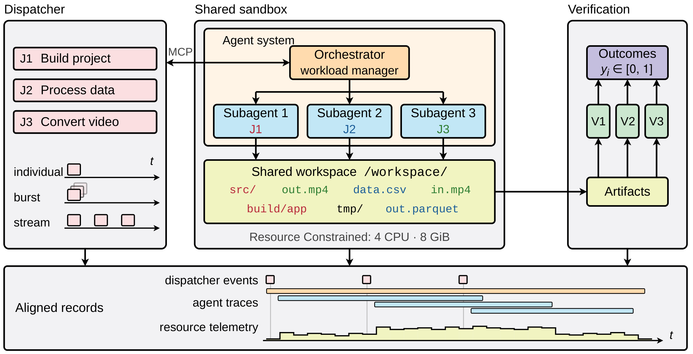
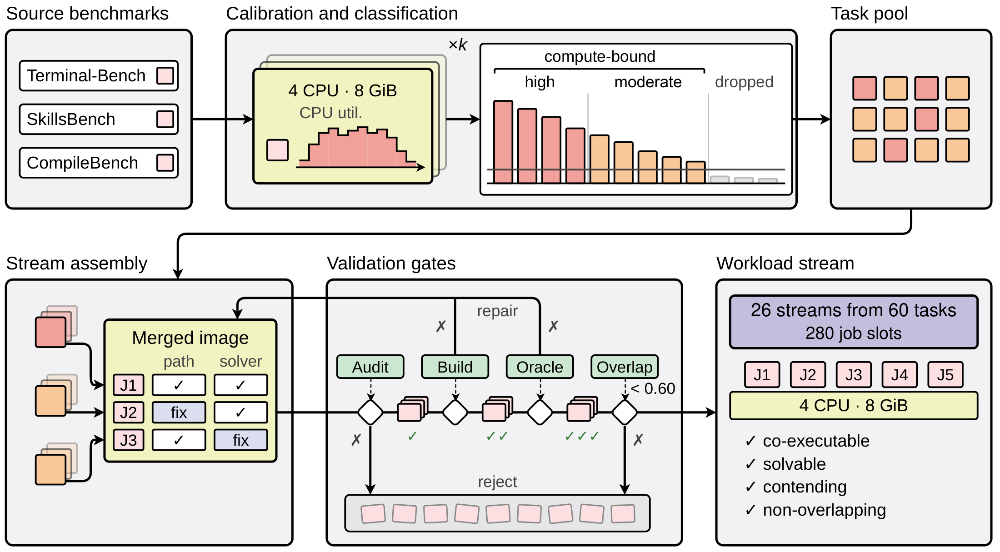
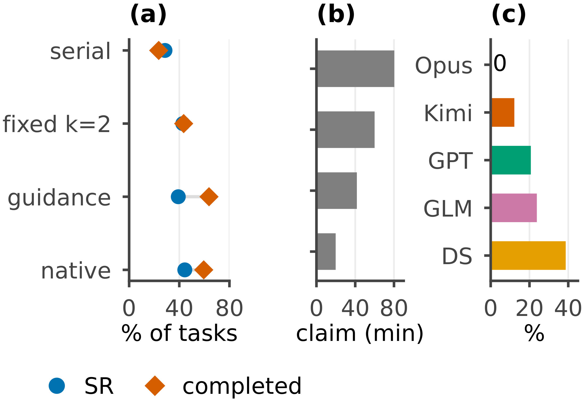
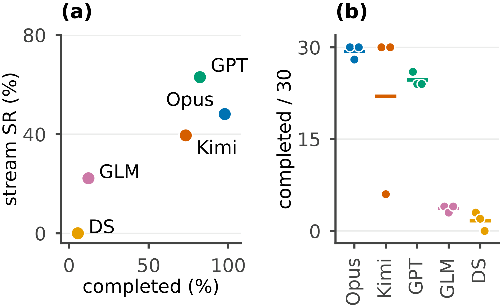
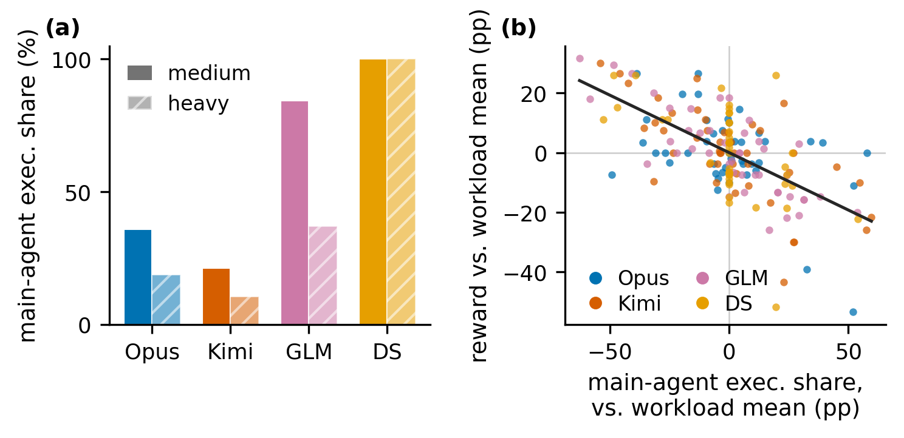

单次运行奖励
主 Agent 执行工具调用占比每增加 10 个百分点，同工作负载中心化后的奖励平均降低 3.9 个百分点。95% CI：−4.8 至 −2.9 pp。
完成一个任务，只是工作的一部分。当新请求在旧任务结束前不断到来，智能体还能持续交付吗？
1清华大学 2哥伦比亚大学 * 共同第一作者 · † 通讯作者
本页采用 2026 年 11 月 11 日、rebuttal 之前的论文快照（d9e71fa）。快照 PDF 包含主 Agent 执行占比分析；arXiv 记录的版本历史可能不同。
主 Agent 掌握任务领取入口。当它忙于前台执行命令时，新请求可能无法及时接入。真实轨迹显示：主 Agent 执行占比更高，与更低的交付表现、更长的领取等待相关。
主 Agent 执行工具调用占比每增加 10 个百分点，同工作负载中心化后的奖励平均降低 3.9 个百分点。95% CI：−4.8 至 −2.9 pp。
对应同样的执行调用占比变化，领取覆盖率降低 5.2 个百分点。95% CI：−6.4 至 −4.0 pp。
在主 Agent 前台执行期间到达的任务，比同次运行中的其他任务等待更久。
来源：rebuttal 前快照第 4.2 节。执行占比按工具调用次数计算，不是 CPU 时间占比。这是观察性关联，不是因果效应，也不意味着主 Agent 在所有场景都不应该执行任务。查看图表与适用范围 ↓
在流式执行（stream）中，外部调度器按时间释放任务。智能体查看已到达的请求、领取下一项任务，再通过工具和子代理组织执行。
所有任务共享4 个 CPU 核心、8 GiB 内存配额和同一个工作空间。独立验证器检查最终产物；智能体自己报告“完成”，并不等于任务正确。
任务随时间到达，由同一个智能体系统管理共享工作负载。

统一任务格式、标定资源需求、合并执行环境，再验证组合后的工作负载。未通过检查的候选需要修复并重新验证。

相较于独立执行的能力参考，所有被测系统在重负载下的平均任务奖励均下降了 13.0–22.7 个百分点。
在中负载中，GLM 与 Kimi 的独立执行 SR 仅差 0.6 个百分点，流式执行时却相差 14.2 个百分点。
对 GLM，固定并发数为 2，与每个档位中最佳智能体管理策略的差距均不足 4 个百分点。
SR 为每个计分任务的平均验证奖励，包含部分得分。pp 表示百分点。在同一档位内比较独立与流式执行；不同档位的任务组成不同。数值沿用 10 月预印本。
| 模型 | 中负载·独立 | 中负载·流式 | 重负载·独立 | 重负载·流式 |
|---|
在中负载下，有效奖励吞吐率为各系统自身顺序执行参考的 1.49–2.22 倍。交付更快与单任务奖励下降可以同时发生。
GLM 的串行 FIFO 策略在重负载下，有 73.3% 的已释放任务从未被领取。固定并发 k = 2 的 SR 为 42.8%，原生管理为 44.4%。

对同一个 30-task 工作负载，预印本记录的最终报告完成数为 30、6、30。严格按六小时时限计算，则为 30、5、30：低交付运行的第六次完成晚于时限。这些是报告完成数，不是验证成功数。

在 rebuttal 前的分析中，主 Agent 执行工具调用占比每增加 10 个百分点，与同工作负载中心化后的单次运行奖励降低 3.9 个百分点、领取覆盖率降低 5.2 个百分点相关。任务在主 Agent 执行前台命令时到达，其领取等待时间的中位数为同次运行中其他任务的 2.0 倍。

结果对应模型与执行框架的组合，而不是单独模型的排名。推断受限于 10 个中负载和 5 个重负载工作负载；重负载的置信区间只能作粗略检查。任务没有显式依赖、价值或优先级。独立执行是能力参考，不是等资源成本基线。
计分对称排除 11 个无法由验证器有效判断的任务；首次采样内存超配额之后完成的任务不计奖励。历史运行中存在超时后活动及共享产物影响。本页保留 rebuttal 之前的 d9e71fa 论文快照，不混入 rebuttal 修订分数；当前公开代码可能已包含后续工程修复。30-task 分析属于个案研究。
先看资源争用：任务交给不同子代理，仍然共享系统级状态。随后三个案例分别展示接入停滞、单项请求占用整个工作负载预算，以及重复运行中的覆盖率失稳。这里聚焦多任务管理，不将单任务做错混为管理失败，也不据此估计各模型的失败率。
任务资源与工作负载包：定时到达计划、共享环境、参考解和验证器。
仓库 · 等待公开发布执行框架扩展：任务流、调度器集成、共享执行和工作负载验证。
仓库 · 等待公开发布代码正在准备公开发布。在开放之前，访问仓库链接可能需要权限。
@misc{zhu2026aosbench,
title={AOS-Bench: Can LLM Agents Manage Dynamic Workloads?},
author={Zhu, Erle and Zhang, Genrui and Hu, Keyang and
Su, Mingyu and Wang, Hongning},
year={2026},
eprint={2610.33178},
archivePrefix={arXiv},
url={https://arxiv.org/abs/2610.33178},
note={Preprint}
}